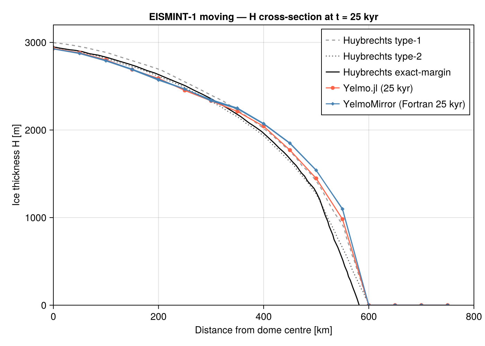
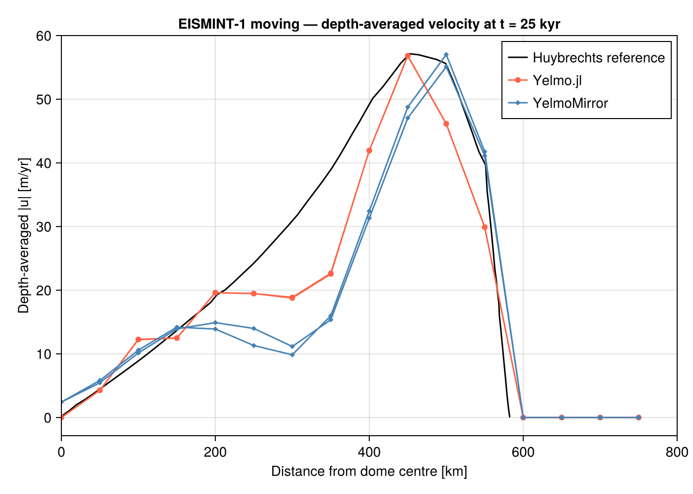
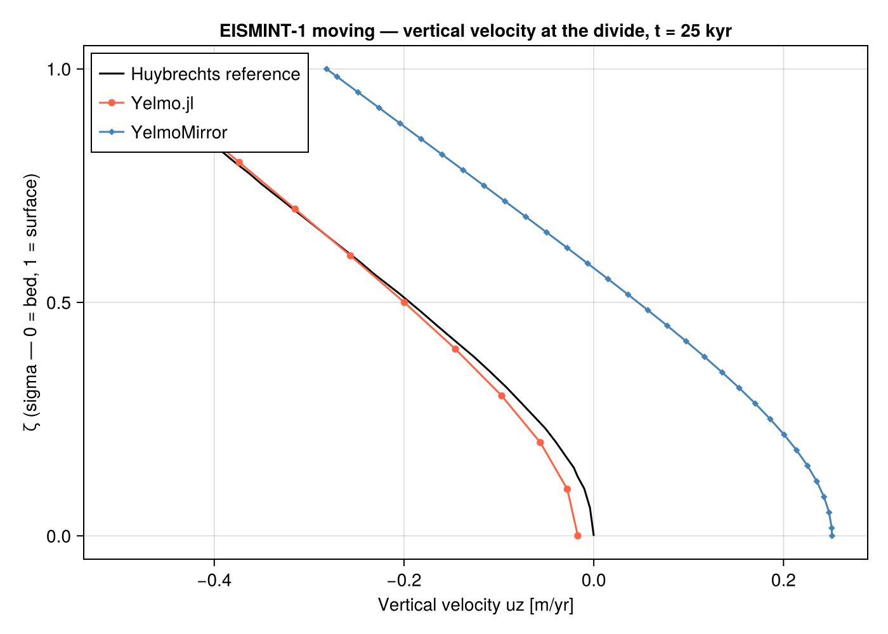

EISMINT-1 Moving Margin
Test files: test/benchmarks/test_eismint_moving.jl, test/benchmarks/test_eismint_moving_lockstep.jl Fixture: test/benchmarks/fixtures/eismint_moving_t25000.nc Solver tested: SIA + adaptive predictor-corrector timestepping Validation: Huybrechts (1996) type-1 / type-2 / exact-margin reference profiles + YelmoMirror lockstep
Setup
EISMINT-1 Moving Margin (Huybrechts et al. 1996, Experiment B1) is a classic isothermal radial-ice-sheet benchmark. A uniform circular accumulation pattern drives ice growth on a flat bed; the equilibrium dome is ~3 km tall with a margin at ~575 km.
| Parameter | Value |
|---|---|
| Domain | 31 × 31, dx = 50 km, symmetric about (775, 775) km |
Glen exponent n | 3 |
Rate factor A (rf_const) | 1 × 10⁻¹⁶ Pa⁻³ yr⁻¹ |
SMB inside R_el | +0.5 m/yr |
SMB outside R_el | (r − R_el) × M_dot (ablation ramp) |
R_el | 450 km (radius of zero-mass-balance contour) |
| Steady-state time | ~25 kyr |
The thermodynamics module is bypassed (ytherm.method = "fixed") so the benchmark exercises only the SIA velocity + advection pipeline.
What it tests
test_eismint_moving.jl — transient trajectory test to t = 5 kyr:
- SIA velocity solver producing finite
ux,uy,uz. - Vertical velocity from continuity (
uz_method = 3). - Explicit upwind advection of
H_iceviatopo_step!. - Adaptive HEUN + PI42 timestepping under
dt_method = 2. - Mass conservation: total volume positive and growing.
- Dome forms at the geometric centre within 2 cells.
test_eismint_moving_lockstep.jl — full 25 kyr run + YelmoMirror comparison:
- Steady-state
max(H),mean(H),max(uxy)within a set tolerance of the Huybrechts type-2 reference values. - Cell-by-cell
H_ice/uxy_barcomparison against the committed YelmoMirror fixture att = 25 kyr.
Diagnostic figures
The figures below are from the full 25 kyr steady-state run in examples/eismint_moving_compare.jl (Yelmo.jl in orange, YelmoMirror / Fortran in blue, Huybrechts references in grey / black).
Ice thickness cross-section (H vs distance from dome centre):

Yelmo.jl and YelmoMirror agree closely and both fall between the Huybrechts type-1 (dashed grey) and type-2 (dotted grey) envelopes, bracketing the exact-margin reference (solid black).
Depth-averaged velocity (|u| vs distance from dome centre):

Peak velocity near the margin (~450 km) is well captured. Both models show the velocity peak slightly offset from the Huybrechts reference, consistent with the coarse 50 km grid.
Vertical velocity profile at the ice divide:

Yelmo.jl (orange) matches the Huybrechts reference (black) closely throughout the column. YelmoMirror (blue) shows a larger residual because the Fortran uz_method option differs from the Julia port's vertically-integrated continuity approach.
How to run
# 5-kyr transient test (fast, CI-friendly):
julia --project=test test/benchmarks/test_eismint_moving.jl
# Full 25-kyr lockstep comparison (requires the committed fixture):
julia --project=test test/benchmarks/test_eismint_moving_lockstep.jl
# Comparison plots (requires CairoMakie; produces figures/eismint_moving/*.png):
julia --project=test examples/eismint_moving_compare.jlBenchmark struct
include("test/benchmarks/helpers.jl")
using .YelmoBenchmarks
b = EISMINT1MovingBenchmark() # Nx=Ny=31, dx=50 km, summit at (775,775) km
s = state(b, 0.0) # NamedTuple of analytical IC fields
y = YelmoModel(b, 0.0; p=p, boundaries=:bounded)